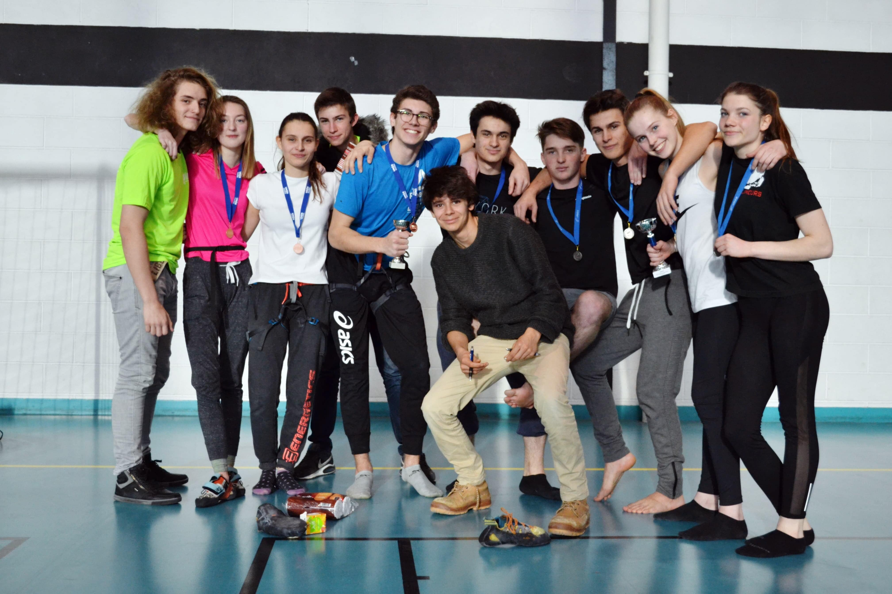
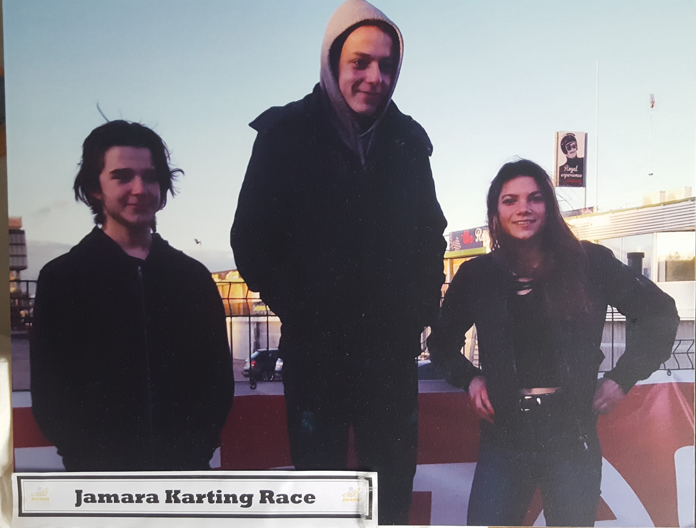

Hello, I'm Maéla !!! 😊
Hey ! I'm a first year EMLV student, I'm going to introduce you all the things I like in my life. I hope you will enjoy it ! 😉
Discover Le WagonSport
Sport allows me to externalize my feelings, to fix me objectives and to exceed me. It's a good way to meet new poeple.
Gymnastics
I'm in fond of gymnastics since the age of 8. I went to the national championships last year with my Team. I'm at Leostunt association with the PULV.
Rock-Climbing
I also practice rock-climbing, Indeed, I also went to the national championships 2 years ago with my Team. And I'm also in Leoclimb association with the PULV.
Hobbies
I love extrem sensations, it allows me to feel free.
Karting
I enjoy doing Karting, I go there at least once or twice a year, with my family and I also with friends. I really like speed and competition.

Paragliding
Paragliding is one of the most relaxing thing I ever do, I did it above Annecy's lack. It was just breathtaking. The landscapes were amazing and you feel very small in the air.
Surfing
I like surfing during my summer holidays. Usually, I surf with my cousins and my brother at Les-Sables-d'Olonne. It's like walking on the sea.
Snowboarding
I tried snowboarding the last time I went to Les Saisies during winter holidays. I really enjoyed it ! It's different than skiing but both are amazing.

Travelling
Travelling is such a beautiful thing, it allows to discover new cultures, new people, new landscapes... Let's speak about my 2 favorite travels.
Mayotte
During the 2014's summer holidays, I went to Mayotte with my brother and my father. It's a little french island between Africa and Madagascar. There, the life is very simple, the weather is tropical and the landscapes are amazing. In fact, scuba-diving is so cool, I swam with dolphins, turtles, manta rays and a large range of fishes and corals, which is impressive. I also climn the "Mont Choungui", once at the top, the view is breathtaking.

Canada
During the 2015's summer holidays, I went to Canada with my brother and my father too. There we were hosted by my father's school friend. It was very hot this summer, not like in winter. We visited many cities such as Montréal, Toronto, Québec and of course the capital, Ottawa. We saw Niagara Falls and we went at the bottom of them, they are so huge it's impressive.

Space
I'm fascinated by Space and our Milky Way, it's so mysterious. Indeed, there are so many stars or other elements like black holes, nebulae... I also admire Northern Lights even if I have nerver seen one yet, It's one of my dreams.


Cars/Planes
Since I'm a child I swim in the automotive world because of my brother and my father who are in fond of in this sector. Indeed, I love seeing beautiful cars, and my friends are always chocked that I know a lot about this. That's also why I love doing Karting.
I also like planes. However, I don't have any specific reason for that, I'm just impressed about their style and how they work. I live in a small city so it's not very noisy but I'm not so far od Orly Airport so we hear planes above my house. I know that people doesn't like this sound (like for trains or cars) but for me, It's relaxing.
Music
I love listening to music. There is not a day where I don't listen to music. I don't have any favorite kind of music, indeed, I listen as well as rock as pop but also rap and electro...
Nature
Landscapes
I love walking alone and admire the wild landscapes such as in the mountains, on the beach, in the forest, in fields...These moemnts are essentials for me because I can feel free to think and do what I want. Each place is different but I love as well as mountains as tropical islands.


Animals
I like every kinds of animals, they are so cute.